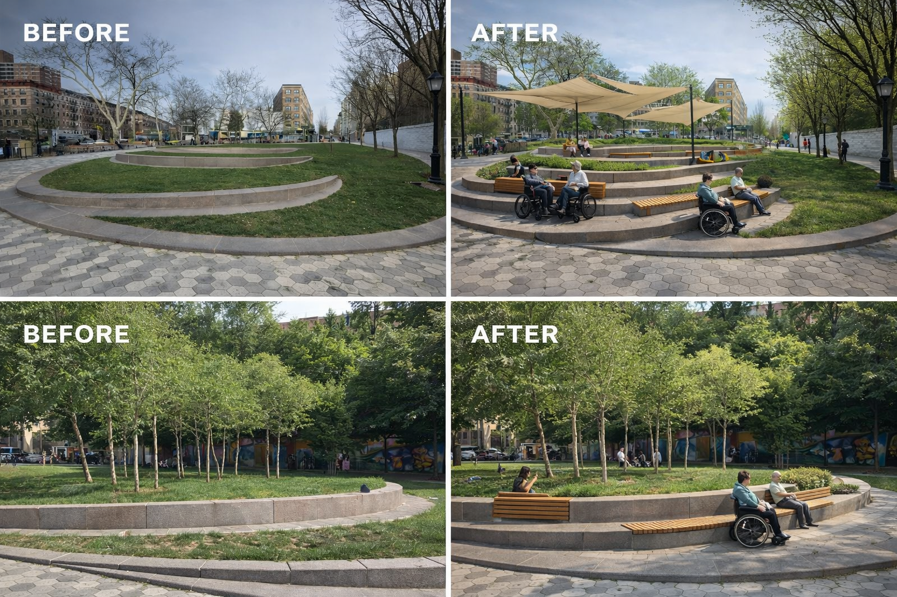

Inclusive Harlem: Redesigning Harlem Pedestrian Plaza for Comfort, Dignity, and Shared Public Use
This project proposes a more welcoming, accessible, and inclusive plaza for a wide mix of users. The redesign focuses on comfort, dignity, visibility, circulation, and shared public use, using AI-assisted image development and human design judgment.
About the Project
Project Goal: Redesign Harlem Pedestrian Plaza as a more inclusive public space that works for many different users, with stronger comfort, accessibility, dignity, visibility, and shared use.
Essential Question: How can Harlem Pedestrian Plaza be redesigned so it feels more welcoming, inclusive, and usable for a wide mix of people with different needs?
What This Project Produces
- User diversity analysis
- Accessibility and comfort review
- Comfort and inclusion map
- Conflict analysis
- Redesign proposal
- Seating and amenities strategy
Key Deliverables
- Survey summary and precedent comparison
- Three concept options
- Final redesign and visualizations
- Budget and timeline
- Website page, AI log, and PDF
The Problem
Harlem Plaza does not function as an equally inclusive public space. While it is active and well-used, its current design conditions systematically limit how different groups are able to occupy, move through, and remain in the space. These limitations are not accidental — they are spatial decisions that prioritize certain users over others.
An inclusive public plaza must do more than exist as open space. It must actively support different bodies, time patterns, and social needs. The current plaza falls short of that standard in several key ways:
- Elderly residents: The existing seating consists primarily of granite seat walls and fixed benches without armrests. For elderly users, rising from a low stone surface without arm support is physically difficult. This is not just discomfort — it limits how long seniors can remain in the space, effectively excluding them from extended use.
- People with disabilities: While entry points meet ADA requirements, the interior of the plaza lacks continuous accessible pathways. Key areas such as the central lawn and upper sections are difficult to reach for wheelchair users and those with mobility limitations. Partial accessibility signals that not all users are equally considered.
- Families with children: The plaza provides open space but lacks clearly defined, safe play areas with visible sightlines. Parents are forced to either stand in full sun or sit in areas that do not face their children. This creates discomfort and limits how families can use the space.
- Unhoused individuals: Public plazas in dense urban neighborhoods are often the primary outdoor space for people experiencing homelessness. However, many public spaces are designed in ways that intentionally discourage their presence. Features such as segmented benches, sloped seating, and uncomfortable materials are often framed as neutral design decisions but function as forms of exclusion.
- In Harlem Plaza, the absence of weather protection, limited access to water, and lack of amenities that support longer stays create conditions that are not actively hostile, but still exclude through neglect. An inclusive redesign must move beyond avoiding harm and instead provide spaces that support dignity, rest, and basic human needs.
- Commuters and pass-through users: Heavy pedestrian traffic from the nearby 1-train creates fast-moving circulation that overlaps with areas intended for sitting and gathering. Without clear spatial separation, movement and rest conflict with one another, reducing comfort for both.
The challenge of this redesign is not simply aesthetic. It is spatial and social: how can one plaza serve many users fairly, without making any group feel excluded, displaced, or overlooked?
The Problem
Harlem Plaza does not fully support inclusive, dignified public use. Existing conditions suggest limited comfort, insufficient shade, uneven accessibility, and a layout that does not clearly balance different types of users or activities. As a result, the plaza can feel under-equipped for elderly residents, people with disabilities, families, commuters, and people who need places to sit, rest, or gather comfortably.
The redesign challenge is not only aesthetic. It is social and spatial: how can one plaza serve many people fairly without making any group feel excluded, displaced, or overlooked?
Site / Context
This project focuses on inclusion as a site-analysis lens. The plaza was studied through comfort, accessibility, circulation, visibility, and shared use. The goal is to understand how the current space supports or fails different users throughout the day.
User Groups
- Elderly residents
- People with disabilities
- Families and children
- Commuters and pass-through users
- Unhoused individuals
- Local community members
Observed Issues
- Uneven comfort and limited weather protection
- Unclear movement paths and weak seating variety
- Potential conflict between active and quiet uses
- Accessibility gaps in how the space is experienced
- Limited amenities that support dignity and longer stays
The plaza was analyzed through direct observation of how different users occupy space throughout the day. Patterns of comfort, movement, and exclusion reveal that the design does not distribute usability evenly.
Comfort and Inclusion: The most comfortable areas of the plaza are limited and unevenly distributed. Shaded seating is scarce, and many seating options lack backrests or arm support. As a result, users who require more physical support — including elderly individuals and people with mobility challenges — are less able to remain in the space for extended periods.
Accessibility: While entrances meet accessibility standards, interior circulation is fragmented. Not all areas are equally reachable, particularly for wheelchair users. This creates a hierarchy of access where some spaces are effectively restricted despite being visually open.
Circulation and Conflict: Movement through the plaza is dominated by commuters passing to and from the subway. These fast-moving paths overlap with areas intended for sitting and gathering, creating friction between users who are moving quickly and those who want to remain in place.
Visibility and Safety: The lack of clearly defined zones means that users must constantly negotiate space. Families lack clear areas where children can play safely within view, and individuals seeking rest or privacy have few protected zones.
Dignity and Duration of Stay: The plaza is designed for short-term use rather than extended occupation. Limited shade, lack of amenities, and rigid seating reduce the ability for users — especially unhoused individuals — to remain comfortably and with dignity.
Comfort and Inclusion Analysis
A spatial analysis of the plaza identifies clear patterns of comfort and exclusion. The central paved area is fully exposed to direct sun from approximately 10am to 4pm during warmer months, creating a thermal barrier that elderly users, young children, and individuals with heat sensitivity cannot comfortably cross. Seating along the eastern edge receives partial afternoon shade, while northern seating areas remain fully exposed throughout the day. As a result, the most accessible routes through the plaza are not the most comfortable, and the most comfortable areas are limited in availability.
The primary accessible path runs along the southern edge from the subway entrance, but there is no continuous accessible route connecting to the upper northwestern section of the plaza. This effectively limits full access to a significant portion of the space, reinforcing uneven usability across different user groups.
Conflict Analysis
The primary use conflict occurs between fast-moving transit commuters and stationary users. During peak hours (approximately 7–9am and 5–7pm), commuters use the plaza as a direct route between the subway entrance and surrounding streets. The fastest movement path cuts diagonally across the central plaza — the same area most suitable for seating, gathering, and social use.
Secondary conflicts occur between active and quiet users. Children and informal play activities require open, flexible space, while elderly users and individuals seeking rest need calm, stable environments. The current layout does not clearly separate these uses, forcing different activity types into shared space without defined boundaries.
Accessibility Review
Current accessibility conditions are partially effective but incomplete. The main entry from the 137th Street subway stop meets ADA standards in terms of width and surface quality. However, several key limitations remain:
- The central lawn area includes grade changes without clearly integrated ramps or level circulation paths, limiting access for wheelchair users.
- Fixed granite seating is low and lacks armrests, making it difficult for elderly users or those with mobility limitations to use comfortably.
- The plaza lacks tactile paving or surface indicators for low-vision users navigating interior spaces.
- Wayfinding and signage are minimal and primarily English-based, limiting accessibility for non-English-speaking users.
Designing for Unhoused Users
Designing for unhoused individuals requires confronting a broader pattern in public space design: what is often presented as “neutral” or “inclusive” design has historically included features intended to discourage long-term presence. Armrests placed at the center of benches, sloped or segmented seating, and deliberately uncomfortable surfaces are commonly used to prevent lying down or extended rest. These are not neutral decisions — they are forms of spatial exclusion often referred to as hostile design.
This proposal explicitly rejects that approach. Inclusion in public space does not mean managing or hiding vulnerable users; it means designing environments that support a wider range of human needs without stigma or displacement.
Genuinely inclusive design for unhoused users includes:
- Covered seating and weather protection: Shade structures and rain shelter support all users, but are especially important for individuals who cannot leave the space during extreme weather conditions.
- Access to water: Drinking fountains or bottle-filling stations are basic public amenities that support health and dignity, particularly during periods of high heat.
- 24-hour usability: A plaza that remains safely lit and welcoming at night serves a broader range of users, including those who rely on public space beyond daytime hours.
- Absence of hostile features: Seating should not include center armrest dividers, sloped surfaces, or materials designed to discourage rest. These elements are often framed as design solutions but function as exclusionary barriers.
This approach aligns with a broader body of urban design thinking that prioritizes inclusion and dignity in public space. Researchers and practitioners such as William H. Whyte and Mitchell Duneier have argued that successful public spaces are those that support a wide range of users, including those who are most vulnerable, rather than designing them out.
Design Options
Three concepts were developed to test different approaches to inclusion in the plaza. Each option responds to the same core question, but emphasizes a different design priority.
Option 1 — Comfort First Plaza
Prioritizes shaded seating, rest zones, flexible benches with backs and armrests, and calmer places for pause. This option focuses on physical comfort and longer stays.
Option 2 — Shared Use Plaza
Balances movement, gathering, and informal public life. This option strengthens circulation while creating spaces that different user groups can share more easily throughout the day.
Option 3 — Community Support Plaza
Centers dignity, care, and inclusive public-space principles. It imagines the plaza as a social commons with supportive amenities, welcoming edges, and more equitable use.
Final Proposal
The final proposal combines the strongest parts of all three concepts into one inclusive redesign. The selected direction adds shade structures, accessible seating, clearer circulation, and more socially balanced gathering areas. The result is a plaza that feels more legible, comfortable, and welcoming for users with different physical needs, time patterns, and expectations of public space.
AI-generated redesign visual showing the transformation of the plaza into a more accessible and comfort-oriented public space.
Core Design Features
- Shaded seating and improved thermal comfort
- More accessible seating arrangements
- Clearer movement and gathering zones
- Improved dignity through inclusive amenities
- Stronger visibility and shared-use logic
Amenities, Operations, and Budget Plan
- Phase 1: seating, shade, and circulation upgrades
- Phase 2: planting, signage, and comfort amenities
- Phase 3: maintenance and operations framework
- Budget strategy focused on high-impact public use improvements
Human Reflection on AI Use
What AI helped with: AI supported rapid visual exploration, helped test spatial ideas, and produced original redesign imagery that made it easier to communicate atmosphere, seating concepts, and an inclusive tone.
What required human judgment: Human decisions defined what inclusion means in this plaza, selected the final concept, interpreted real user needs, and evaluated whether the design supported dignity, comfort, and shared public use in a meaningful way.
This project shows that AI is useful for visualization and iteration, but the most important design decisions still depend on human research, ethical judgment, and project-specific thinking.